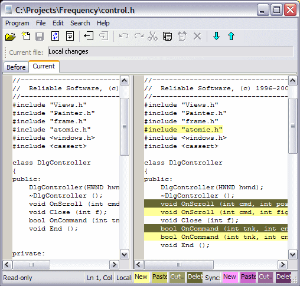

Once you receive a script, it is listed in the Inbox. You can select the script and see the list of files changed by it in the lower pane. You can double-click on each file to see the specific changes brough by the selected script.

Fig. The view of the changes using the built-in differ. Press F4 to go to the next change, or Shift-F4 for the previous change. You can copy a selection to the Windows clipboard by pressing Ctrl-C. The left pane shows the resulting file.